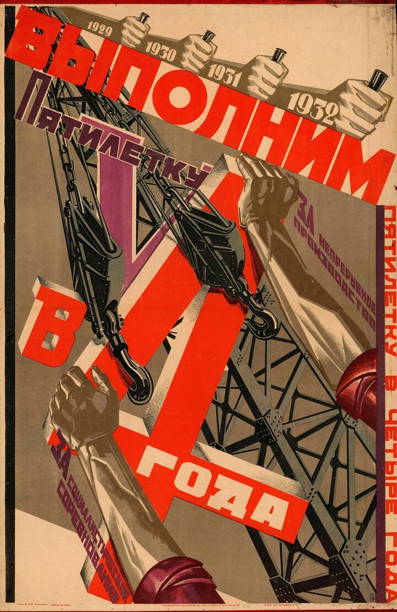
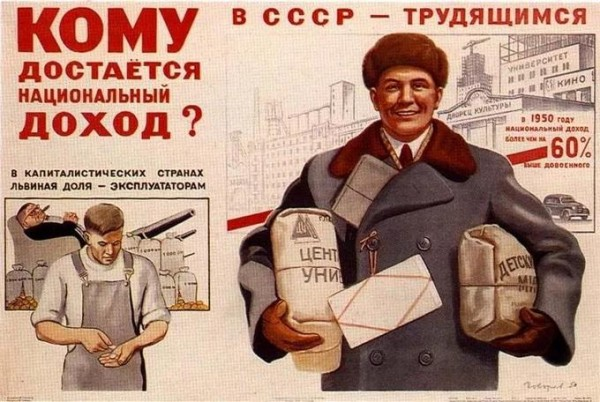
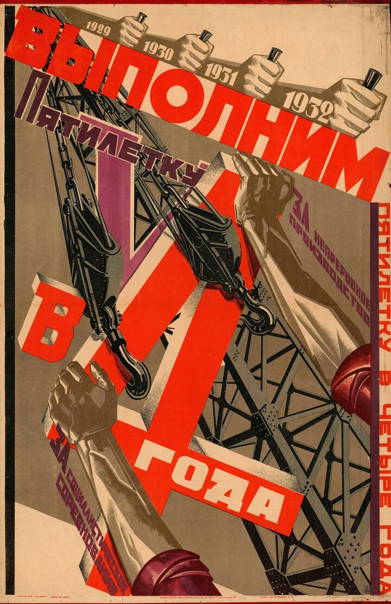
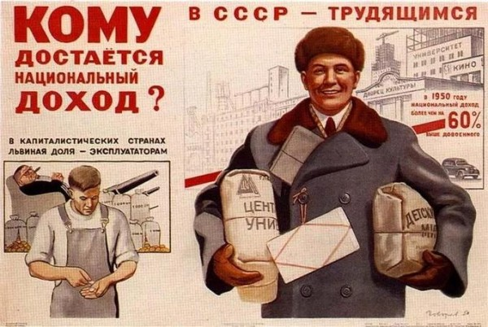

Введение
Экономическая система играет ключевую роль в развитии государства, определяя, как распределяются ресурсы, как развиваются отрасли и как обеспечивается благосостояние граждан. В мире существуют различные модели экономических систем, среди которых наиболее распространёнными являются рыночная и плановая экономики. Каждая из этих систем имеет свои особенности и влияние на экономический рост, социальное развитие и качество жизни.
Рыночная экономика
Рыночная экономика — это экономическая модель, основанная на добровольном обмене ресурсами между продавцами и покупателями с учётом действия законов спроса и предложения. Рынок — это совокупность экономических отношений, отношений производителей и потребителей, касающихся обмена ресурсами, то есть торговли. Продавец предлагает свой товар, а покупатель отдаёт за него некий обменный эквивалент.
Сегодня рыночную экономику, самую эффективную из всех известных, можно рассматривать как достижение человеческой цивилизации. Через рынок регулируются объемы производства и потребления, то есть что и в каком количестве производить, ориентируясь на потребителя, его вкусы и потребности. Это саморегулирующая система с внутренним порядком и закономерностями, система, вознаграждающая тех, кто интенсивно и эффективно работает, дифференцируя доходы и поддерживая действенные стимулы к труду.
В то же время рыночная экономика, будучи динамичной, подвержена постоянным нарушениям равновесия; это нестабильная система. Движущей силой рыночного механизма является конкуренция с ее плюсами и минусами, ведущая к разорению одних производителей и укреплению позиций других, рождению монополий, установлению монопольных цен и диктата над потребителем. Рынок порождает значительную дифференциацию доходов и ведет к социальному расслоению общества.
Преимущества:
- Свобода выбора для производителей и потребителей.
- Конкуренция стимулирует инновации и эффективность.
- Гибкость в ответ на изменения спроса и предложения.
К наиболее существенным недостаткам рыночной экономики следует отнести:
- Cтихийный характер развития, то есть чередование спадов и пиков производства;
- Неэффективное использование природных ресурсов и отсутствие механизма защиты окружающей среды.)
- Невозможность рыночными методами решать в обществе социальные проблемы, такие, как социальная защищенность граждан, пенсионное обеспечение, образование, здравоохранение и другие;
Плановая экономика
Плановая экономика — это система, в которой государство осуществляет контроль над производственными средствами и принимает все решения о производстве и распределении товаров и услуг.Плановая (командная) экономика характеризуется тем, что здесь все распределение ресурсов и производство планируется «сверху», то есть государственными органами. Правительство и министерства сами определяют что, как и для кого должно производиться, по каким ценам продаваться. Такая экономика базируется на принципах коренным образом отличающихся от рыночной: государственная собственность; директивное ценообразование; централизованное планирование.
Преимущества
- Отсутствие кризисов перепроизводства.
- Контроль над ключевыми отраслями экономики.
- Социальная справедливость и распределение ресурсов.
Недостатки
- Меньшая гибкость и инновации.
- Неэффективность в распределении ресурсов.
Примеры стран с плановой экономикой
Примером является Советский Союз, который использовал плановую экономику в разные исторические периоды. Китай также долгое время развивался по модели плановой экономики до начала рыночных реформ в 1978 году.
Смешанная экономика
Исторический опыт показал, какая система рыночная или командная, функционирует эффективнее. Достаточно сравнить такие страны как, Западную и Восточную Германию (имеется ввиду существовавшие до недавнего времени ФРГ и ГДР), Южную и Северную Корею. Смешанная экономическая система. В настоящее время стран с чисто рыночной или командной экономической системой, практически, не осталось. Свободный рынок времен Адама Смита ушел в прошлое. Не переходя определенных границ, государство в современном обществе играет значительную роль. Оно не только определяет таможенную и налоговую политику, но и регулирует действия монополий на рынке, имеет свой сектор в экономике. Государство производит, а в отдельных случаях и распределяет товары и услуги, контролирует некоторые цены (например, на энергоносители). Мы уже говорили о том, что степень государственного вмешательства в экономику является спорным вопросом. Многие страны его решают по разному. Можно сказать, что в таких странах как Франция и Швеция роль государства достаточно высока, а в Великобритании и США она значительно ниже.
Фотогалерея
 



Видео
| Рыночная экономика | Плановая экономика | |
|---|---|---|
| Решения о производстве | Принимаются частными предприятиями и потребителями на основе спроса и предложения. | Приняты государственными органами через централизованное планирование. |
| Роль государства | Минимальная роль государства, регулирование через законы и налоги. | Государство контролирует все аспекты экономики, включая производство и распределение ресурсов. |
| Цены | Цены устанавливаются свободно на основе спроса и предложения. | Цены устанавливаются государством, часто с фиксированными значениями. |
| Конкуренция | Высокая конкуренция, стимулирующая инновации и эффективность. | Отсутствие конкуренции в большинстве отраслей, что может привести к низкой эффективности. |
| Инновации | Сильный стимул для инноваций благодаря конкурентным рыночным условиям. | Меньший стимул к инновациям, так как предприятия не конкурируют и часто не могут внедрять новые технологии. |
| Неравенство | Может быть высоким из-за рыночных механизмов и конкуренции. | Государство пытается уменьшить неравенство, но это может приводить к другим социальным и экономическим проблемам. |
| Гибкость | Высокая гибкость и способность быстро адаптироваться к изменениям рынка. | Меньшая гибкость из-за централизованного планирования, что может привести к затруднениям в адаптации к изменениям. |
| Экономический рост | Экономический рост часто высокий, особенно в странах с высокоразвитыми технологиями и инфраструктурой. | Экономический рост может быть стабильным, но часто сопровождается неэффективностью и долгосрочными проблемами с производительностью. |
Заключение
Каждая из экономических систем — рыночная и плановая — имеет свои сильные и слабые стороны. Рыночная экономика стимулирует инновации, конкуренцию и рост, но может приводить к социальному неравенству. Плановая экономика обеспечивает стабильность и социальное равенство, но часто страдает от неэффективности и отсутствия гибкости. Сегодня многие страны используют смешанную экономику, сочетая элементы обеих систем. Это позволяет достигать баланса между свободным рынком и необходимостью государственного регулирования, что способствует устойчивому развитию и снижению социальных рисков.